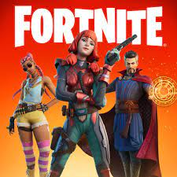
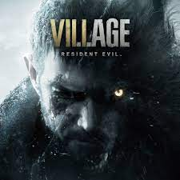
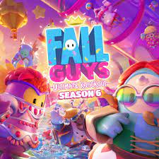

Atualmente




Antes dos primeiros jogos para consumidores serem desenvolvidos, alguns foram criados por especialistas em tecnologia. O primeiro, “Tennis for two”” (1958), foi criado pelo físico Willian Higinbotham para manter os visitantes do laboratório Broockhaven entretidos. Em 1961, estudantes do Instituto de Tecnologia de Massachusetts desenvolveram o SpaceWar. Ainda com o SpaceWar, o engenheiro Nolan Bushnell, com a ajuda de Ted Dabney, criou o Computer Space, que permitia jogar o jogo conectado em uma televisão.
A década de 70 foi muito importante na evolução dos games, iniciando com o primeiro jogo operado com moedas, que foi instalado na Universidade de Stanford. Em seguida, Nolan Bushnell apareceu mais uma vez nessa história com a criação do famoso Atari e seu primeiro jogo, Pong. O Sucesso foi gigantesco, mas infelizmente o jogo só chegou no Brasil em 1977, com o nome Telejogo. Foi também na década de 70 que chegaram ao mercado o Magnavox Odyssey em 1972, o primeiro videogame comercializado que podia ser jogado na TV, e em 1976 o Fairchild Channel F, o primeiro videogame que funcionava com cartuchos. Em 1977 é lançado o Atari VCS 2600 que revoluciona o mercado e logo se torna o videogame mais popular. Em 1979 saiu o jogo Asteroids, que trazia novidades como o registro dos recordes dos jogadores com suas iniciais.
Uma década também muito importante para a evolução dos games com a criação de grandes clássicos dos consoles e jogos. Logo no ano de 1980 nasce o Pac Man, que não precisa de apresentações. Em meados de 80 os computadores ficam tão populares que passam a ser preferidos frente aos consoles. Em 1985 outro grande marco da história dos games, a Nintendo lança o Donkey Kong. O sucesso da Nintendo é tão grande que a Sega aposta suas fichas em uma grande novidade, o Master System. Para encerrar a década com chave de ouro, a Nintendo lança o Gameboy, o videogame portátil mais popular da história.
Apesar do sucesso enorme dos games nas décadas de 70 e 80, os anos 90 não ficaram tão atras. Ela começa com a rivalidade Mario X Sonic. Com esses 2 jogos os consoles domésticos superam os fliperamas. Em 1994 outros dois grandes lançamentos. Os primeiros jogos para celular são lançados com o Tetris mobile e o Gigante Play Station também é lançado. Em 1997 a Nokia lança o “Snake”, famoso jogo da cobrinha, que vira um grande clássico.
Essa década não foi tão grande quanto as passadas, mas foi longe de ser ruim para o mercado dos Games. Logo em 2000 foi lançado o Play Station 2 no Japão, filas em frente as lojas foram formadas para comprar o novo console. 2005 e 2006 trouxeram uma sequência de grandes lançamentos ao mercado. O Play Station 3 foi lançado pela Nintendo, enquanto a Microsoft contra-atacou com o X-Box. A Nintendo também lançou o Wii, com uma grande novidade da interação física.